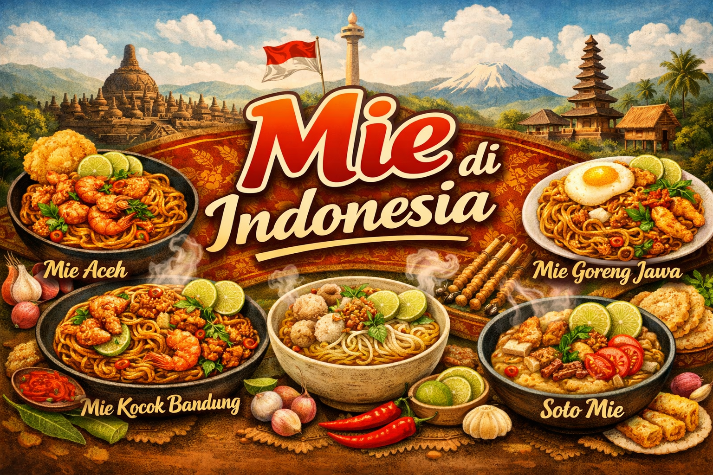

Mie di Indonesia

|
|
Kedatangan Mie ke Nusantara
Mie pertama kali diperkenalkan ke Indonesia oleh pedagang Tionghoa pada abad ke-19. Saat itu, mie dianggap sebagai makanan mewah dan hanya dinikmati oleh kalangan tertentu. Namun, seiring berjalannya waktu, mie semakin populer dan menjadi bagian tak terpisahkan dari kuliner Indonesia.
Akulturasi dan Inovasi
Kedatangan mie di Indonesia memicu akulturasi yang menarik. Masyarakat Indonesia mengadopsi mie dan mengolahnya dengan bumbu-bumbu lokal, menghasilkan berbagai jenis mie yang unik dan lezat. Beberapa faktor yang mempengaruhi perkembangan mie di Indonesia adalah:
- Pengaruh Budaya Tionghoa: Masyarakat Tionghoa di Indonesia membawa berbagai jenis mie dan teknik pembuatannya. Mie kuning, bakmi, dan bihun adalah beberapa contoh pengaruh budaya Tionghoa.
- Bumbu Lokal: Penggunaan bumbu-bumbu khas Indonesia seperti bawang merah, bawang putih, kemiri, dan cabai memberikan cita rasa yang kaya dan unik pada mie.
- Adat Istiadat: Mie seringkali menjadi bagian dari upacara adat atau hidangan spesial. Misalnya, mie panjang sering dihidangkan saat perayaan ulang tahun sebagai simbol umur panjang.
Jenis-jenis Mie di Indonesia
Indonesia memiliki beragam jenis mie, masing-masing dengan ciri khas dan sejarahnya sendiri. Beberapa jenis mie yang populer antara lain:
- Mie Ayam: Mie kuning yang disajikan dengan potongan ayam suwir, sayuran, dan kuah kaldu.
- Bakmi: Mie yang lebih pipih dan kenyal, sering disajikan dengan berbagai topping seperti babi merah, pangsit, atau bakso.
- Mie Goreng: Mie yang digoreng dengan bumbu-bumbu yang kaya akan rempah, seperti kecap manis, bawang merah, dan bawang putih.
- Kwetiau: Mie lebar yang terbuat dari tepung beras, seringkali disajikan dengan saus kental atau digoreng.
- Bihun: Mie yang sangat tipis, terbuat dari tepung beras, dan sering digunakan dalam sup atau tumisan.
|
Copyright © 2026 by Dio Alif Utomo | 01SIFK002 | 251011750146
|